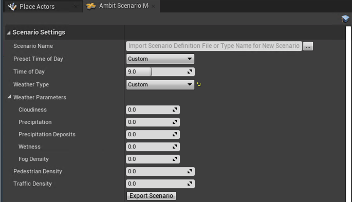
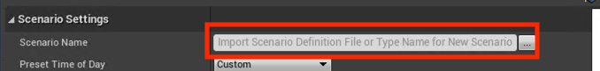
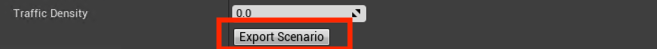
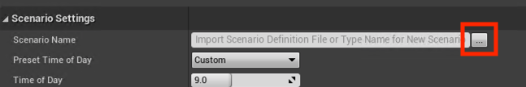

Individual Scenario Generation¶
One of the main functionalities Ambit provides is exporting scenarios that can be used for importing into your own scene. A scenario here is defined as a collection of environment effects and objects spawned by Ambit Spawners that allow for small variance in a larger scene.
Ambit provides both one-off and bulk scenario generation functionality. In both, Ambit will output a Scenario Definition File (SDF), that can be used for importing your scenario's information into other programs or re-import back to Ambit for verification and editing.
Customizing Your Scenario¶
You can find the Scenario Settings menu by selecting AWS Ambit Scenario Mode from the list of available modes.

Environment Variables¶
You can use pre-set Time Of Day and Weather options in order to quickly configure your scenario.
If you would like to further customize your environment parameters, you may do so under the Weather Parameters section.
Dynamic Obstacle Densities¶
If you would like dynamic obstacles in your scenario, set your preferred density via the density parameters.
Note: These parameters are expected to be percentages and therefore set between [0.0 - 1.0].
Import and Export¶
To export your scenario, first set your Scenario Name in the settings menu.

Next you can click Export at the bottom of the Scenario Settings menu.

If you would ever like to import your saved scenario and edit it, click the "..." next to the Scenario Name field. Doing so will import all of the Scenario Settings that were saved, alongside the spawners and their configurations.

Scenario Definition File Specification¶
The output file will be a *.sdf.json file, which follows JSON formatting. The specifications for this file are as follows:
Version: This is the version of SDF when it was initially uploaded.
ScenarioName: Refers to the Scenario Name on screen. This will be the Batch Name when using bulk generation.
TimeOfDay: A value [0,24) that represents the time of day, where the whole number is the hour, and the decimal is the percentgage in that hour.
WeatherParameters: A group of parameters that represents what the current weather of the scenario should be.
cloudiness: A value [0,100] that corresponds to how cloudy a scene should be, where 100 is entirely cloudy.
precipitation: A value [0,100] that corresponds to how much rain should be present in the scene, where 100 is pouring heavily.
puddles: A value [0,100] that corresponds to how much water puddling should occur on surfaces, where 100 is extremely all covered in a layer water.
wetness: A value [0,100] that corresponds to how much objects in the scene appear to be wet, where 100 would have an object entirely drenched in water.
fogDensity: A value [0,100] that corresponds to how much fog should be present in the scene, where 100 has the scene densely covered in fog.
PedestrianDensity: A value represented as a percent [0,1] to indicate how many pedestrians should be populated to the scene. Currently, Ambit does not use this value.
VehicleDensity: A value represented as a percent [0,1] to indicate how many vehicles should be populated to the scene. Currently, Ambit does not use this value.
AllSpawnerConfigs: A list of spawner configurations by type.
AmbitSpawner*: An individual type of spawner that has specified values for it. Each spawner has its own settings.
AmbitSpawner: An object representative of static obstacles being spawned by Ambit Spawners.
SpawnedObjects: A list representative of all static objects that should be spawned to screen.
ActorToSpawn: A path to the actor that should be spawned. This is generally a relative path.
Location: The spawned location (x, y, z) of the object relative to the world.
Rotation: The spawned rotation (x, y, z) of the object relative to the world.
VehiclePathGenerator: An object representative of dynamic obstacle pathing.
VehicleToSpawn: A path to the actor that should be spawned. This is generally a relative path.
SpeedLimit: The speed of the vehicle in cm/s.
Waypoints: A list of positions on the scene (x, y, z) that the vehicle should pass through.